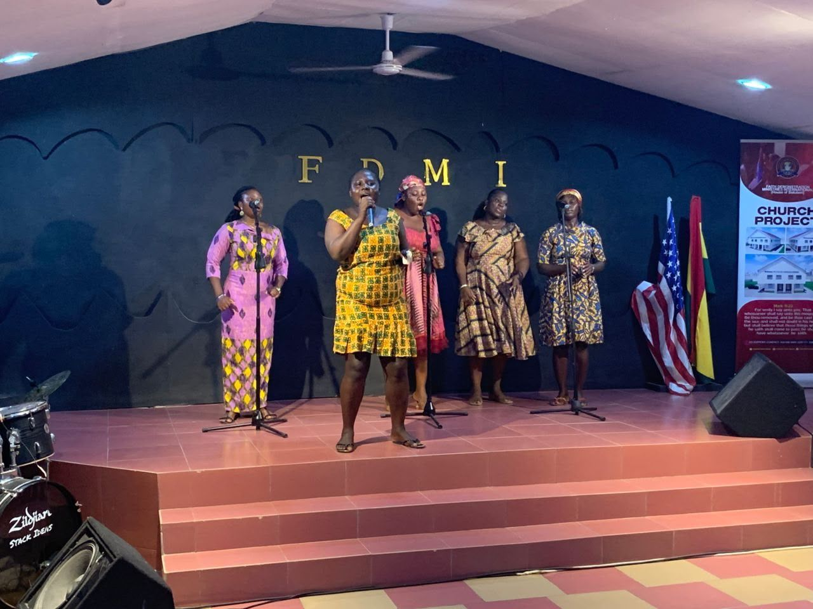
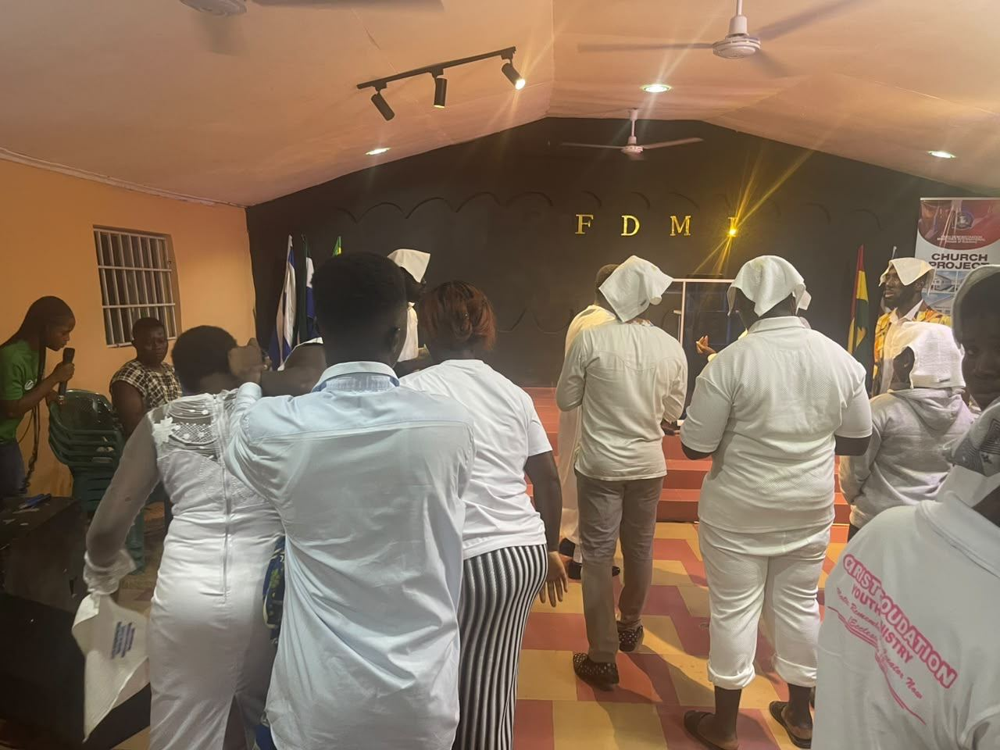
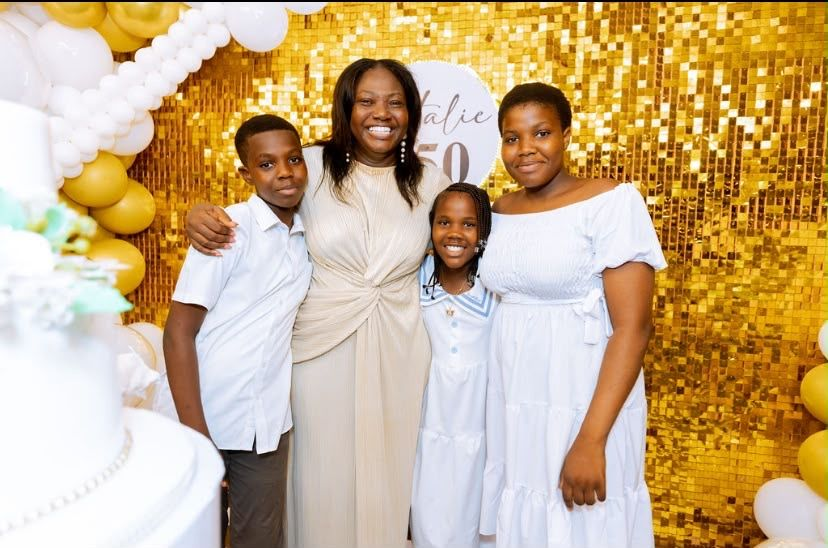

Gallery
Worship, prayer, celebrations and the FDMI family. Select a photo to view it full size.











Video
Our children dancing for joy at a church celebration.
Worship, prayer, celebrations and the FDMI family. Select a photo to view it full size.



Our children dancing for joy at a church celebration.